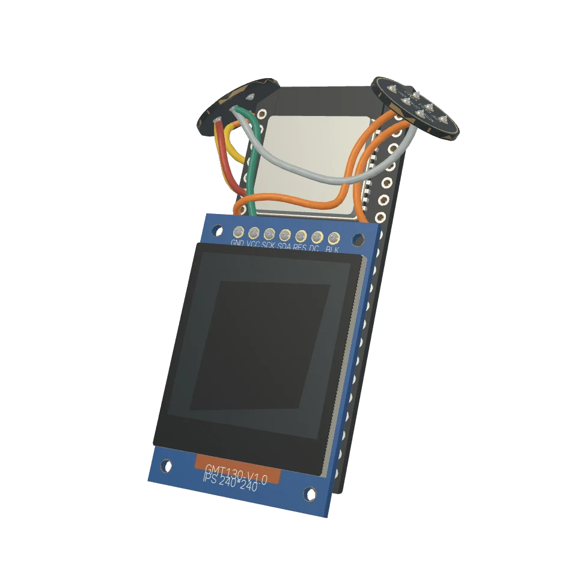
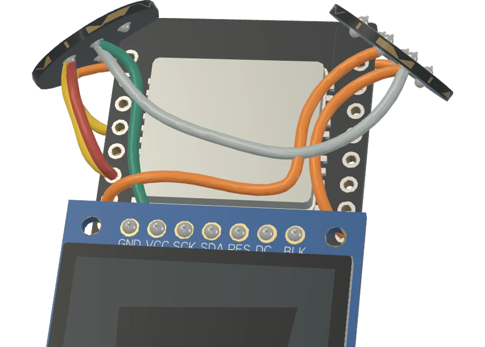

Телефон или гарнитура
Открой приложение и нажми «Начать запись». Перед стартом проверь выбранный микрофон, а во время записи следи за уровнем входа.

Запиши лекцию или встречу. Найди фразу в тексте и послушай её в оригинале.
Скачать приложениеКнопка записи и дисплей рядом. На экране видно, сколько длится разговор.

Используй микрофон телефона, подключи гарнитуру или открой готовый файл.
Открой приложение и нажми «Начать запись». Перед стартом проверь выбранный микрофон, а во время записи следи за уровнем входа.
Когда важна точная формулировка, нажми на строку в расшифровке. Откроется тот момент разговора. Конспект и закладки останутся рядом.
Как работать с записьюНайди слово в расшифровке и нажми на строку. Плеер откроется на нужной секунде.
Приложение отмечает сомнительные фразы. Открой отметку и прослушай исходный звук, прежде чем использовать цитату.
Из тезиса можно перейти к его источнику, когда у него есть ссылка. Закладкой удобно отметить объяснение, к которому захочется вернуться.
Открой аудио в браузере, выбери скорость и поставь закладку. Файл останется на твоём устройстве.
Версия 0.5.22